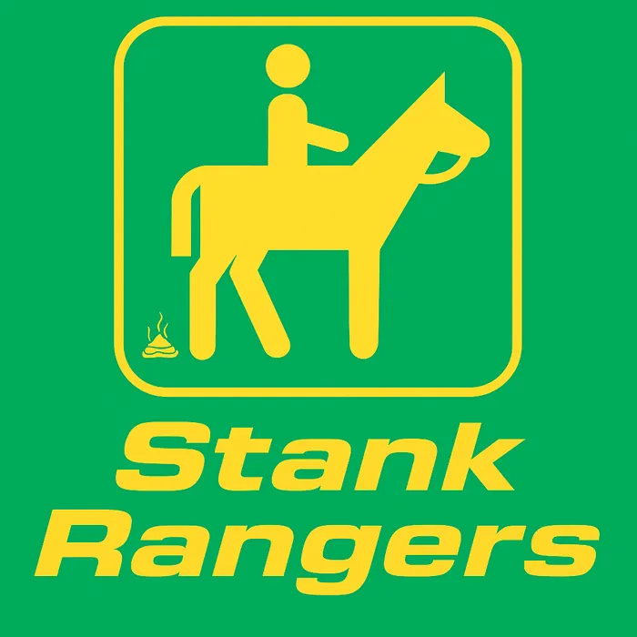

The Stank Rangers – Bio
The Stank Rangers emerged out of my first band, The Rank Strangers, named after the legendary Stanley Brothers tune. We started out playing local fairs and small-town venues close to home, just for the love of picking and having a good time. Whenever I’d get together with friends to jam, a few of them jokingly called us The Stank Rangers. The name stuck—especially after I learned from an old Bluegrass Unlimited article that a group in Australia had already claimed The Rank Strangers back in the 1980s.
Before long, we had Stank Rangers T-shirts floating around—and funny enough, they became popular even with folks who didn’t know a lick of bluegrass.
After more than a decade performing and recording with Michael Cleveland & Flamekeeper—including a Grammy-winning album that featured one of my original songs—I realized something: in all those years, I’d never released my own music. I’d spent my time supporting one of the best in the business, learning, traveling, and finding my own voice. Now, with The Stank Rangers, it finally feels like the right time to share that sound with the world.
Around the bluegrass circuit, most folks still know me as Josh Richards, the guitar player and singer for Michael Cleveland & Flamekeeper. Lately, though, I’ve been transitioning into the name Richey Richards—partly because there are just too many Joshes to be confused with, and partly because Richey was a childhood nickname.
As for the rest of the band? It changes depending on who’s feeling Stanky that night—from family members to bluegrass legends, to my friends with day jobs just down the road. Every one of them brings their own fire, and together we make a kind of high-energy, small-town stankgrass you can smell before you hear it.